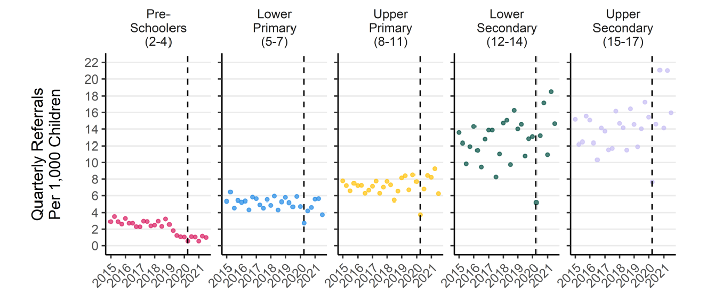
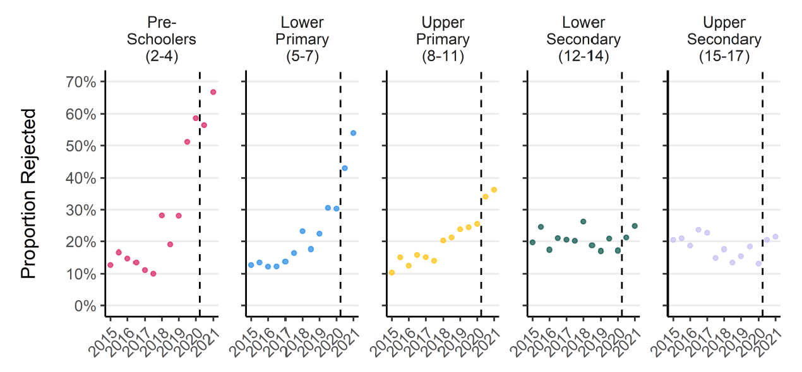
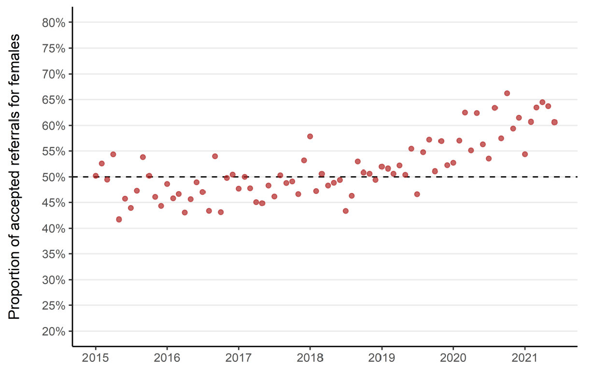

We looked at all children living in the NHS Grampian region (Aberdeen City, Aberdeenshire and Moray). There were 100,000 people under age 18 in total.
We studied children’s referrals to see specialist doctors in out-patient clinics.
We asked these questions
How many children are referred to mental health specialists?
Are more being referred than before?
Which children are accepted for specialist treatment?
Are boys and girls treated differently?
Are older and younger children treated differently?
What did we find?
Many children need specialist mental health care
3% of all children were referred to see a mental health specialist in 2020.
Older children’s mental healthcare needs are rising
Teenagers are being referred to see mental health specialists more often. Referrals are up about 30% since 2015.
Referrals for primary school children have not risen. Referrals for children under 5 are down.

Mental health specialists treat mostly teenagers
We measured which children’s referrals for specialist care were rejected.
20% of secondary schooler’s referrals for mental healthcare are rejected. This hasn’t changed over time.
50% of referrals for young children are rejected. There has been is a large increase in rejection of young children since 2015.
The children treated in the specialist mental health clinics now average 1.5 years older than in 2015.

Boys are being treated less by mental health specialists
In 2015, mental health specialists treated equal numbers of girls and boys. Now boys are being referred less and rejected more. There are now twice as many girls being treated by specialists as boys.

Children living in poverty need more specialist care younger
We compared children living in the poorest areas to those living in the wealthiest areas. Children living in poor neighbourhoods had twice as many referrals for specialist mental health care.
The average age of a child’s first referral to specialist is over a year younger for those living in the most deprived areas.
Tell me more
This research was done as part of the Networked Data Lab with partners at The Health Foundation.
William Ball led this analysis with me. Other contributors from the Aberdeen Centre for Health Data Science were: Corri Black, Sharon Gordon, Bārbala Ostrovska, Shantini Paranjothy, Adelene Rasalam, David Ritchie, Helen Rowlands, Elaine Thompson, Magdalena Rzewuska, and Katie Wilde.
Full details are in our publication Inequalities in children’s mental health care: analysis of routinely collected data on prescribing and referrals to secondary care.
Policy recommendations from our work are in the briefing Improving children and young people’s mental health services